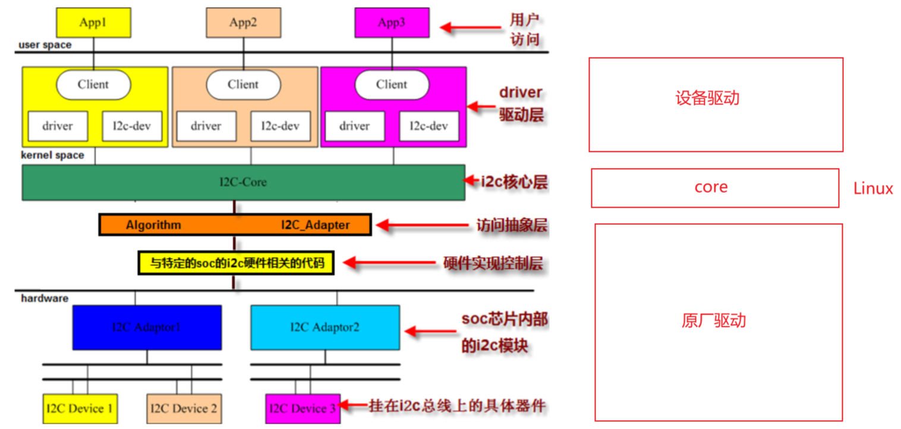
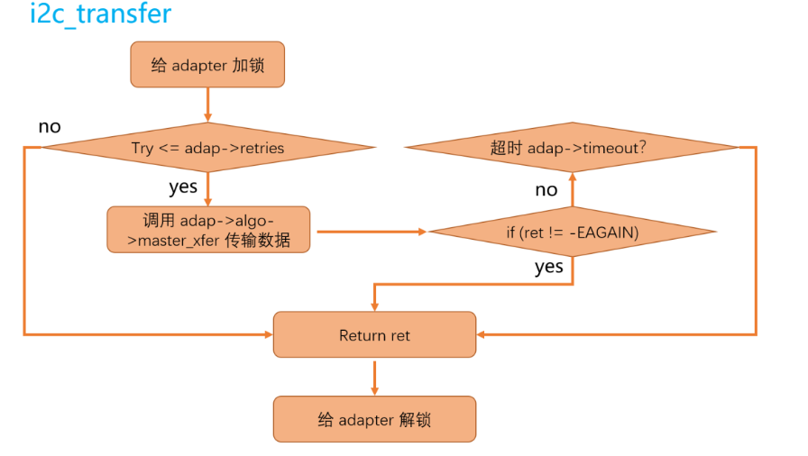

I2C子系统
I2C子系统的架构
Linux内核的I2C子系统同样遵循者”驱动分层”和”主机驱动和设备驱动分离”的理念，它的结构可分为3部分：

- 核心层：由Linux内核提供，为适配器和设备驱动层提供了统一的API，包括注册、注销、传数据等
- 总线驱动层：由芯片原厂负责，主要包括适配器（SoC内的I2C控制器）的配置，以及数据发送/接收函数的定义这2部分
- 设备驱动层：由普通驱动工程师负责，通过核心层提供的通用API，实现对I2C特定波形的发送从而控制具体的设备
核心文件
在Linux内核源代码中的drivers目录下有一个i2c目录，而在i2c目录下又包含如下文件和文件夹：
i2c-core.c：实现了I2C核心的功能以及/proc/bus/i2c*接口i2c-dev.c：通过创建一个字符设备（/dev/i2c-x），提供了一种在用户空间对I2C适配器直接操作的方式，即可以直接在应用层让适配器发送某些波形，和具体的设备无关- busses文件夹：包含一些具体SoC的I2C总线驱动
- algos文件夹：实现了一些I2C总线适配器的通信方法
核心数据结构
内核中的include/linux/i2c.h定义了几个I2C子系统的核心数据结构
总线驱动层
上面提到了总线驱动层需要完成对适配器的配置以及实现I2C波形信号的发送，所以有2个重要的数据结构
i2c_adpter
struct i2c_adpter用于描述一个I2C适配器，定义了 I2C 控制器的硬件特性、操作方法以及所连接的设备。==每个==物理 I2C 总线（如 i2c-0、i2c-1）在内核中==均对应==一个 i2c_adapter 实例
核心作用：
- 抽象 I2C 控制器硬件：封装控制器的寄存器操作、时钟频率、中断等
- 提供通信方法：通过
i2c_algorithm 实现底层I2C报文的收发
- 管理连接的设备：维护挂载在该总线上的I2C设备列表（
i2c_client）
1
2
3
4
5
6
7
8
9
10
11
12
13
14
15
16
17
18
19
20
21
22
23
24
25
26
27
28
29
30
31
32
33
| struct i2c_adapter {
struct module *owner;
unsigned int class;
const struct i2c_algorithm *algo;
void *algo_data;
struct rt_mutex bus_lock;
struct rt_mutex mux_lock;
int timeout;
int retries;
struct device dev;
int nr;
char name[48];
struct list_head clients;
struct list_head userspace_clients;
struct i2c_mux_core *mux_core;
struct i2c_bus_recovery_info *bus_recovery_info;
struct irq_domain *host_notify_domain;
u16 slave_cfg;
u32 bus_clk_rate;
u32 quirks;
struct dentry *debugfs;
bool suspended;
};
|
i2c_algorithm
struct i2c_algorithm：定义了如何通过硬件控制器进行 I2C 通信（如发送/接收数据、支持的功能等）。每个 i2c_adapter都会关联一个 i2c_algorithm，以提供底层硬件操作的具体实现
核心作用：
- 抽象硬件操作：
将 I²C 控制器的寄存器操作（如启动/停止条件、数据读写）封装成统一的接口。
- 支持多种协议：
同时兼容 标准 I²C和 SMBus（System Management Bus）协议。
- 功能查询：告知上层驱动当前适配器支持哪些特性（如 10 位地址、DMA 传输等）
1
2
3
4
5
6
7
8
9
10
11
12
13
14
15
16
17
18
| struct i2c_algorithm {
int (*master_xfer)(struct i2c_adapter *adap,
struct i2c_msg *msgs,
int num);
int (*smbus_xfer)(struct i2c_adapter *adap,
u16 addr,
unsigned short flags,
char read_write,
u8 command,
int size,
union i2c_smbus_data *data);
u32 (*functionality)(struct i2c_adapter *adap);
};
|
常见标志：
| 标志 |
说明 |
I2C_FUNC_I2C |
支持标准 I²C |
I2C_FUNC_SMBUS_EMUL |
可模拟 SMBus（通过 master_xfer） |
I2C_FUNC_10BIT_ADDR |
支持 10 位地址 |
I2C_FUNC_PROTOCOL_MANGLING |
支持特殊时序（如重复启动） |
设备驱动层
I2C子系统和platform框架类似，遵循着Linux的设备驱动模型，并实现了驱动和设备的分离。且i2c_driver和i2c_client也是一对多的关系，即同一份驱动可以创建多个同类型设备（只要匹配的上）
i2c_driver
struct i2c_driver：类似platfor_driver，它用于管理I2C设备的驱动，定义了驱动如何和I2C设备进行交互，包括probe、remove、与设备匹配等操作
1
2
3
4
5
6
7
8
9
10
11
12
13
14
15
16
17
18
19
20
21
| struct i2c_driver {
unsigned int class;
int (*probe)(struct i2c_client *client,
const struct i2c_device_id *id);
int (*remove)(struct i2c_client *client);
void (*shutdown)(struct i2c_client *client);
int (*suspend)(struct i2c_client *client, pm_message_t mesg);
int (*resume)(struct i2c_client *client);
void (*alert)(struct i2c_client *client,
enum i2c_alert_protocol type,
unsigned int data);
int (*command)(struct i2c_client *client,
unsigned int cmd,
void *arg);
struct device_driver driver;
const struct i2c_device_id *id_table;
int (*detect)(struct i2c_client *client,
struct i2c_board_info *info);
const unsigned short *address_list;
struct list_head clients;
};
|
i2c_client
struct i2c_client：它是 Linux 内核中表示 一个具体的 I²C 设备 的数据结构，它描述了连接到 I²C 总线上的物理设备（如传感器、EEPROM 等）。每个被内核识别并绑定了驱动的 I²C 设备都会对应一个 i2c_client 实例
1
2
3
4
5
6
7
8
9
10
| struct i2c_client {
unsigned short flags;
unsigned short addr;
char name[I2C_NAME_SIZE];
struct i2c_adapter *adapter;
struct device dev;
int irq;
struct list_head detected;
};
|
i2c_client依附于i2c_adapter，每个i2c_adapter可以挂多个i2c_clienti2c_client就和platform_device一样，由内核根据设备树自动创建，不需要人手动创建，创建完成后由总线进行匹配
核心层
i2c_msg
struct i2c_msg：它是 I2C 设备驱动和适配器之间传递数据的基本单元，用于封装一次 I2C 传输的详细信息
1
2
3
4
5
6
| struct i2c_msg {
__u16 addr;
__u16 flags;
__u16 len;
__u8 *buf;
};
|
addr
- 表示 I2C 从设备的地址（7位或10位格式）
- 地址通常由设备制造商指定（如 0x50 表示 EEPROM）
flags
控制消息行为的标志位，常用值包括：
I2C_M_RD：表示读取从设备的数据（否则为写入）I2C_M_TEN：使用 10 位地址（默认为 7 位）I2C_M_STOP：在当前消息后发送停止条件（默认自动添加）I2C_M_NOSTART：复用前一个消息的起始条件（用于复合操作）
len
- 指定消息数据的长度（字节数），即
buf 指向的缓冲区大小
buf
- 指向存储读/写数据的缓冲区，该缓冲区在内核中分配，如果要传递到用户空间，需要用
copy_from_user之类的API
常见API
总线驱动层
源码分析请看飞书12-2
虽然I2C是一个总线，但其适配器的驱动实际上是个platform驱动而不是I2C驱动，因为SoC上的各种控制器都位于CPU的内存空间中（可以通过内存直接访问寄存器），并没有挂在总线上，只有控制器连接的设备才挂载在总线上
1
2
3
4
|
int i2c_add_adapter(struct i2c adapter *adapter);
int i2c_add_numbered_adapter(struct i2c adapter *adap);
void i2c_del_adapter(struct i2c adapter * adap);
|
设备驱动层
1
2
3
|
int i2c_add_driver(struct i2c driver *driver);
void i2c_del_driver(struct i2c driver *driver);
|
核心层
1
2
3
| int i2c_transfer(struct i2c_adapter * adap, struct i2c_msg *msgs, int num);
int i2c_master_send(struct i2c_client *client,const char *buf ,int count);
int i2c_master_recv(struct i2c_client *client, char *buf ,int count);
|
i2c_transfer函数用于进行I2C适配器和I2C设备之间的一组消息交互（可同时包含写或读），其中第2个参数是一个指向 i2c_msg数组的指针，所以i2c_transfer一次可以传输多个i2c_msg- 后面2个函数都是对
i2c_transfer的封装，只能进行单一的读或写操作
i2c_transfer本身不具备发送波形的能力，其内部调用了adpter->alogritm的master_xfer

使用i2c_transfer发送数据的一个例子：
1
2
3
4
5
6
7
8
9
10
11
12
13
14
15
16
17
18
19
20
21
22
23
24
25
26
27
28
29
30
31
32
33
34
35
36
37
38
39
40
41
42
43
44
45
46
47
48
49
50
51
52
53
54
55
56
57
|
int i2c_read_regs(struct i2c_client *client, u8 reg, u8 *val, int len)
{
struct i2c_msg msgs[2];
int ret;
msgs[0].addr = client->addr;
msgs[0].flags = 0;
msgs[0].len = 1;
msgs[0].buf = ®
msgs[1].addr = client->addr;
msgs[1].flags = I2C_M_RD;
msgs[1].len = len;
msgs[1].buf = val;
ret = i2c_transfer(client->adapter, msgs, 2);
}
int i2c_write_regs(struct i2c_client *client, u8 reg, const u8 *val, int len)
{
u8 *buf;
int ret;
buf = kmalloc(len + 1, GFP_KERNEL);
if (!buf)
return -ENOMEM;
buf[0] = reg;
memcpy(&buf[1], val, len);
ret = i2c_master_send(client, buf, len + 1);
kfree(buf);
}
|
注意：
- 读寄存器的时候一般需要同时进行“读”和“写”操作，因为读之前要先写入设备寄存器的地址
- 写寄存器的时候最后的数据长度是
len+1，因为也要写入设备寄存器的地址
调试
sysfs
1
2
3
4
5
6
7
8
9
10
11
12
13
14
15
16
17
18
19
20
|
ls /sys/bus/i2c/devices/ -l
0-001e -> ../../../devices/platform/soc/2100000.aips-bus/21a0000.i2c/i2c-0/0-001e
0-003c -> ../../../devices/platform/soc/2100000.aips-bus/21a0000.i2c/i2c-0/0-003c
1-0014 -> ../../../devices/platform/soc/2100000.aips-bus/21a4000.i2c/i2c-1/1-0014
1-001a -> ../../../devices/platform/soc/2100000.aips-bus/21a4000.i2c/i2c-1/1-001a
i2c-0 -> ../../../devices/platform/soc/2100000.aips-bus/21a0000.i2c/i2c-0
i2c-1 -> ../../../devices/platform/soc/2100000.aips-bus/21a4000.i2c/i2c-1
[ root@lrq]: /sys/bus/i2c/drivers$:ls
at24 mc13xxx stmpe-i2c
da9052 mma8450 tlv320aic23-codec
dummy ov2640 tsc2007
edt_ft5x06 pca953x vtl_ts
egalax_ts pfuze100-regulator wm8960
gt9147 sgtl5000 wm8962
ir-kbd-i2c sii902x
|
/sys/bus/i2c/devices/下的设备，不一定有匹配上的驱动，如果匹配成功了，目录中会有driver目录，反之则没有- 同样的，
/sys/bus/i2c/drivers/下的驱动，不一定有匹配上的设备，如果匹配成功了，目录中会有设备目录
i2c-dev
Linux内核通过通过字符设备框架，提供了一种在用户空间对I2C适配器直接操作的方式，即可以直接在应用层让适配器发送某些波形，和具体的设备无关
i2c-tools是一个用于调试i2c设备的命令行工具，它底层其实依赖了i2c-dev，它具备以下功能：
| 命令 |
功能 |
使用示例 |
i2cdetect |
扫描 I2C 设备 |
sudo i2cdetect -y 1 |
i2cget |
读取寄存器 |
sudo i2cget -y 1 0x50 0x00 |
i2cset |
写入寄存器 |
sudo i2cset -y 1 0x50 0x01 0xAA |
i2cdump |
导出所有寄存器 |
sudo i2cdump -y 1 0x50 |
i2ctransfer |
复杂读写（SMBus） |
sudo i2ctransfer -y 1 w2@0x50 0x01 0xAA r2 |
设备树写法
1
2
3
4
5
6
7
8
9
10
11
12
13
14
15
16
17
| //imx6ull.dtsi
/{
soc{
aips2{
i2c1: i2c@021a0000 {
#address-cells = <1>;
#size-cells = <0>;
compatible = "fsl,imx6ul-i2c", "fsl,imx21-i2c";
reg = <0x021a0000 0x4000>;
interrupts = <GIC_SPI 36 IRQ_TYPE_LEVEL_HIGH>;
clocks = <&clks IMX6UL_CLK_I2C1>;
status = "disabled";
};
}
}
}
|
1
2
3
4
5
6
7
8
9
10
11
12
13
14
15
16
17
18
19
20
21
22
23
24
25
26
27
| // imx6ull-alientek-emmc.dts
&i2c1 {
clock-frequency = <100000>;
pinctrl-names = "default";
pinctrl-0 = <&pinctrl_i2c1>;
status = "okay";
oled@3c {
compatible = "alientek,oled";
reg = <0x3c>;
status = "okay";
};
gt9147:gt9147@14 {
compatible = "goodix,gt9147", "goodix,gt9xx";
reg = <0x14>;
pinctrl-names = "default";
pinctrl-0 = <&pinctrl_tsc
&pinctrl_tsc_reset >;
interrupt-parent = <&gpio1>;
interrupts = <9 0>;
reset-gpios = <&gpio5 9 GPIO_ACTIVE_LOW>;
interrupt-gpios = <&gpio1 9 GPIO_ACTIVE_LOW>;
status = "okay";
};
};
|
- I2C控制器位于SoC的内存空间，所以它直接是SoC里某个数据总线的子节点
- I2C控制器还要在板级设备树中设置时钟频率和
pinctrl
- I2C设备节点需要作为==对应控制器==的子节点